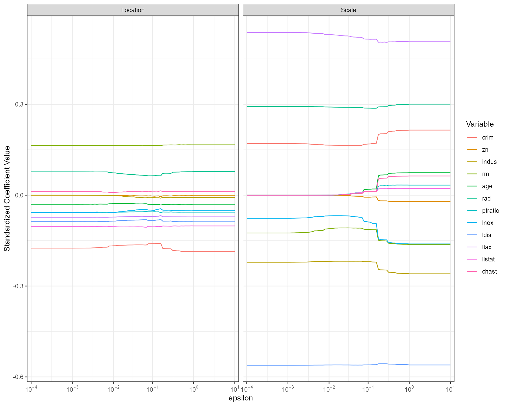

To begin, load the package.
library(smoothic)
#> Loading required package: MASS
#> Loading required package: numDeriv
# For data manipulation and plotting if required
library(dplyr)
#>
#> Attaching package: 'dplyr'
#> The following object is masked from 'package:MASS':
#>
#> select
#> The following objects are masked from 'package:stats':
#>
#> filter, lag
#> The following objects are masked from 'package:base':
#>
#> intersect, setdiff, setequal, union
library(ggplot2)
library(tidyr)Boston Housing Data
Perform automatic variable selection using a smooth information criterion.
fit <- smoothic(
formula = lcmedv ~ .,
data = bostonhouseprice2,
family = "sgnd", # Smooth Generalized Normal Distribution
model = "mpr" # model location and scale
)Display the estimates and standard errors.
summary(fit)
#> Call:
#> smoothic(formula = lcmedv ~ ., data = bostonhouseprice2, family = "sgnd",
#> model = "mpr")
#> Family:
#> [1] "sgnd"
#> Model:
#> [1] "mpr"
#>
#> Coefficients:
#> Estimate SEE Z Pvalue
#> intercept_0_beta 3.66771163 0.12703038 28.8727 < 2.2e-16 ***
#> crim_1_beta -0.01579788 0.00237149 -6.6616 6.602e-09 ***
#> zn_2_beta 0 0 0 0
#> indus_3_beta 0 0 0 0
#> rm_4_beta 0.23056461 0.01931706 11.9358 < 2.2e-16 ***
#> age_5_beta -0.00110316 0.00047342 -2.3302 0.0132312 *
#> rad_6_beta 0.00808459 0.00203408 3.9746 0.0001240 ***
#> ptratio_7_beta -0.02495132 0.00303522 -8.2206 7.538e-12 ***
#> lnox_8_beta -0.29890914 0.12657597 -2.3615 0.0122516 *
#> ldis_9_beta -0.16497129 0.02799878 -5.8921 1.424e-07 ***
#> ltax_10_beta -0.19359305 0.01639456 -11.8084 < 2.2e-16 ***
#> llstat_11_beta -0.17099398 0.02080743 -8.2179 7.642e-12 ***
#> chast_12_beta 0.05409280 0.02080088 2.6005 0.0066516 **
#> intercept_0_alpha -8.31902812 1.97190507 -4.2188 5.642e-05 ***
#> crim_1_alpha 0 0 0 0
#> zn_2_alpha 0 0 0 0
#> indus_3_alpha 0 0 0 0
#> rm_4_alpha 0 0 0 0
#> age_5_alpha 0 0 0 0
#> rad_6_alpha 0.05437986 0.01524640 3.5667 0.0004391 ***
#> ptratio_7_alpha 0 0 0 0
#> lnox_8_alpha 0 0 0 0
#> ldis_9_alpha -0.84849690 0.18351038 -4.6237 1.453e-05 ***
#> ltax_10_alpha 0.85881887 0.33141037 2.5914 0.0068267 **
#> llstat_11_alpha 0 0 0 0
#> chast_12_alpha 0 0 0 0
#> nu_0 0.27822299 0.10931908 2.5451 0.0076889 **
#> ---
#> Signif. codes: 0 '***' 0.001 '**' 0.01 '*' 0.05 '.' 0.1 ' ' 1
#> Penalized Likelihood:
#> [1] 228.3024
fit$kappa # shape estimate
#> [1] 1.520781Plot the standardized coefficient values with respect to the epsilon-telescope.
telescope_df <- fit$telescope_df # dataframe with standardized coefficient values for each epsilon in the telescope
# Variable names (without the response & intercept terms)
p <- ncol(bostonhouseprice2) - 1
names_coef <- names(coef(fit))
names_coef <- names_coef[!(names_coef %in% c(
"intercept_0_beta",
"intercept_0_alpha",
"nu_0"
))]
# Tidy dataframe for plotting
plot_df <- telescope_df %>%
select(
epsilon,
contains(c("beta", "alpha")),
-c("beta_0", "alpha_0")
) %>%
rename_all(~ c("epsilon", names_coef)) %>% # rename columns
pivot_longer(-epsilon) %>%
mutate(type = case_when( # extract whether variable is location or scale
grepl("_beta", name) ~ "Location",
grepl("alpha", name) ~ "Scale"
)) %>%
mutate(coef = sub("_.*", "", name)) # extract variable name
# Plot
plot_df %>%
ggplot(aes(
x = log(epsilon), # log scale
y = value,
colour = coef
)) +
facet_wrap(~type) +
geom_line() +
labs(y = "Standardized Coefficient Value") +
theme_bw()